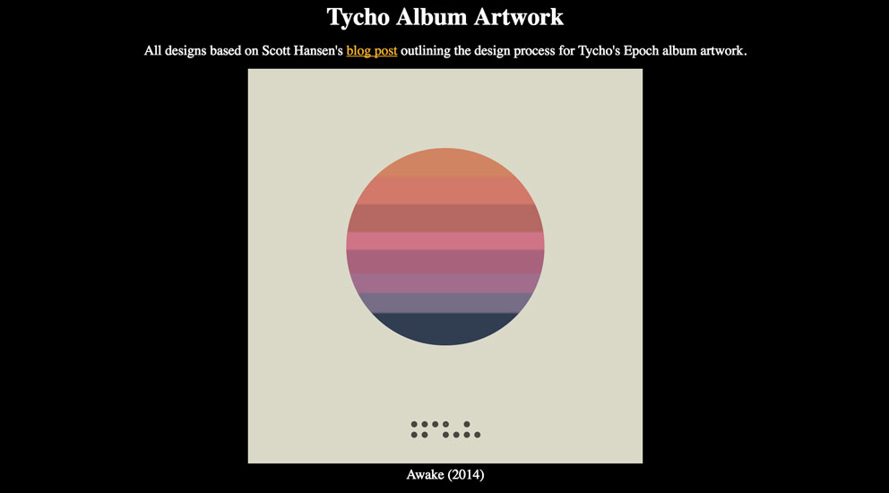

How I learn to CSS
By Chen Hui Jing / @hj_chen
Get inspired

& books


Start building
People go to conferences to get inspired and to learn about things that exist or maybe an overview of how to use it.
But then, they really learn that thing, that technology, when they go home and practice it themselves.
― Una Kravets, Toolsday #34
Share with the world


Some background
My name is Hui Jing.
Self taught designer and developer.
Work at Deep Labs.
Write blog posts from time to time.
Demo #1: OTT radio buttons
 Inspired by Ethan Marcotte's Laziness in the Time of Responsive Design
Inspired by Ethan Marcotte's Laziness in the Time of Responsive Design
The checkbox hack (1/2)
The input and its label must be linked
Either wrap the input in the label
<label>
<input type="radio" name="moment" value="block">
<img src="img/block.jpg" srcset="img/block.jpg 2x" alt="The Block">
<span>The Block</span>
</label>Or use the for="ID_OF_INPUT" attribute on the label
<input type="radio" name="moment" value="block" id="block">
<label for="block">
<img src="img/block.jpg" srcset="img/block.jpg 2x" alt="The Block">
<span>The Block</span>
</label>The checkbox hack (2/2)
Uses the :checked pseudo-class and sibling selectors
.o-option__input {
opacity: 0;
position: absolute;
&:checked + .o-option__img {
border-color: #860038;
}
&:checked ~ .o-option__txt {
color: #860038;
}
}CSS animations (1/3)
The transform: translateX() property with nth-child selectors
.is-active.c-4options {
z-index: -1;
.is-checked.o-option:nth-child(1) {
transform: translateX(100%);
}
.is-checked.o-option:nth-child(3) {
transform: translateX(-100%);
}
.is-checked.o-option:nth-child(4) {
transform: translateX(-200%);
}
}CSS animations (2/3)
The transform: scale() and opacity property
.c-action,
.c-logo__img,
.is-active .o-option:not(.is-checked) {
transform: scale(0);
opacity: 0;
z-index: 0;
}
.is-active .c-action,
.is-active .c-logo__img {
opacity: 1;
transform: scale(1);
}CSS animations (3/3)
The transition and transition-delay property
.o-option,
.c-action,
.c-logo__img {
transition: transform 0.4s ease-in-out, opacity 0.4s ease-out;
transition-delay: 0.1s;
}That 0.1s pause does make a difference ¯\_(ツ)_/¯
Seperation of concerns
- Layout-specific classes prefixed with
l- - Javascript hooks prefixed with
js- - Styling of objects prefixed with
o-
<label class="l-option o-option js-option">
<input class="o-option__input" type="radio" name="moment" value="block">
<img src="https://res.cloudinary.com/huijing/image/upload/w_200/block.jpg" srcset="https://res.cloudinary.com/huijing/image/upload/w_400/block.jpg 2x" alt="The Block" class="o-option__img">
<span class="o-option__txt">The Block</span>
</label>Accessibility problem
Does not play nice with keyboard controls 😔
Make the enhancement a choice that can be toggled
Source code
Demo #2: CSS Album Art
 Inspired by Scott Hansen's Epoch Artwork LineagePseudo-elements
::before and ::after
.element::before {
content: '';
display: block;
width: 50%;
height: 50%;
}Must have the content property to work
At least have empty quotes
Not visible in the page's source, only in CSS
Shapes with CSS (1/3)
This be a circle
.circle {
width: 30vmin;
height: 30vmin;
background: #f2af29;
border-radius: 50%; /* This is the key line, right here */
margin: 0 auto;
}Shapes with CSS (2/3)
This be a triangle
.triangle {
border-top: 18.75vmin solid transparent;
border-bottom: 18.75vmin solid transparent;
border-left: 18.75vmin solid #1e292f;
}Shapes with CSS (3/3)
This be a trapezium
.trapezium {
width: 60vmin;
height: 30vmin;
background: #1e292f;
clip-path: polygon(33% 0, 67% 0, 100% 100%, 0% 100%); /* This is the key line, right here */
}Unfortunately, clip-path is NOT supported in Edge or IE 😔
Box shadow trick
Multiple box shadows are a thing
box-shadow: [horizontal offset] [vertical offset] [blur radius] [optional spread radius] [color];Make use of the offsets for positioning, and the blur radius for sizing
.o-logo-basic {
border-radius: 50%;
height: 1px;
width: 1px;
position: absolute;
bottom: 10%;
left: 50%;
box-shadow: -6vmin 0 0 0.5vmin #47473f, -4vmin 0 0 0.5vmin #47473f,
-2vmin 0 0 0.5vmin #47473f, 0 0 0 0.5vmin #47473f,
4vmin 0 0 0.5vmin #47473f, -6vmin 2vmin 0 0.5vmin #47473f,
-4vmin 2vmin 0 0.5vmin #47473f, 0 2vmin 0 0.5vmin #47473f,
2vmin 2vmin 0 0.5vmin #47473f, 4vmin 2vmin 0 0.5vmin #47473f,
6vmin 2vmin 0 0.5vmin #47473f;
}CSS Scroll Snap
Okay fine, it's scroll-jacking ¯\_(ツ)_/¯
Only works on Firefox and Edge 😔
main {
width: 100vw;
height: 85vmin;
white-space: nowrap;
overflow-y: hidden;
overflow: auto;
-webkit-overflow-scrolling: touch;
scroll-snap-type: mandatory; /* this is the key line */
}
section {
display: inline-block;
width: 100%;
height: 100%;
scroll-snap-coordinate: 0 0; /* this is the key line */
}Source code
To find out more...
- Stuff you can do with the “Checkbox Hack”
- High Performance Animations
- Learning To Use The :before And :after Pseudo-Elements In CSS
- Creating Responsive Shapes With Clip-Path And Breaking Out Of The Box
- Single Div Drawings with CSS
- A Single Div: a CSS drawing project by Lynn Fisher
- Introducing CSS Scroll Snap Points